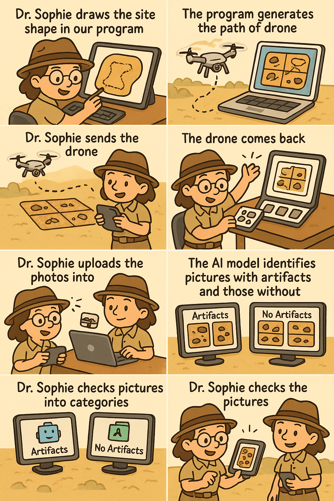
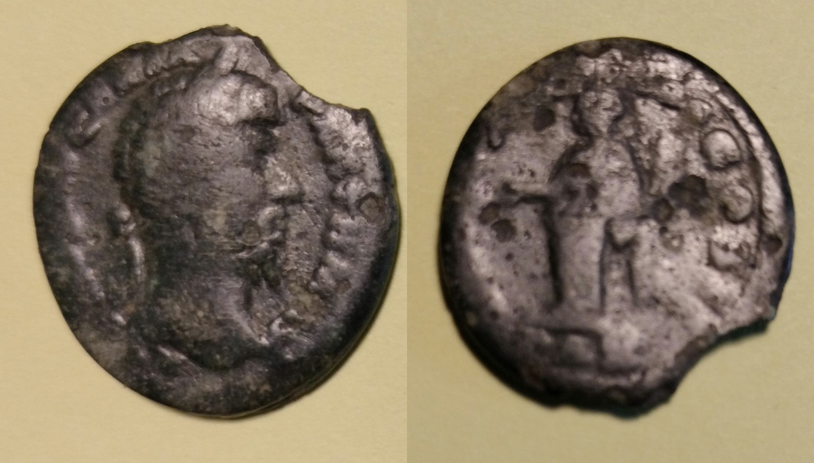
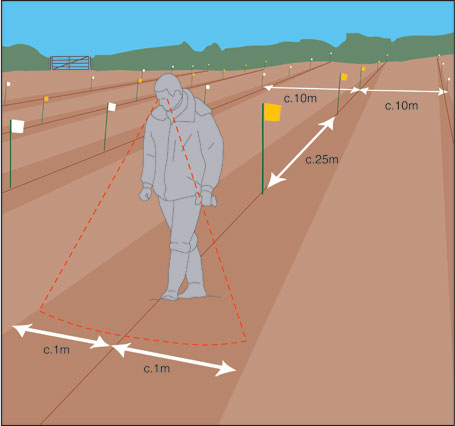
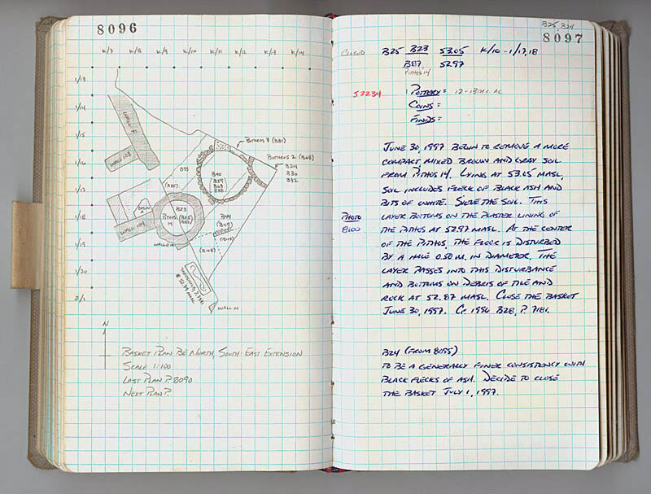
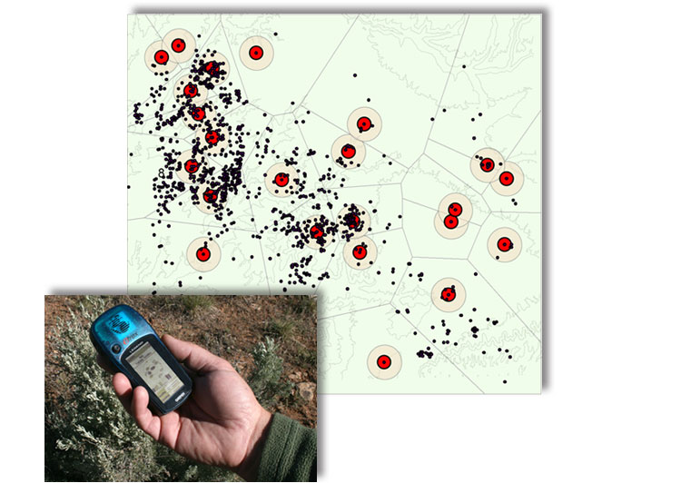
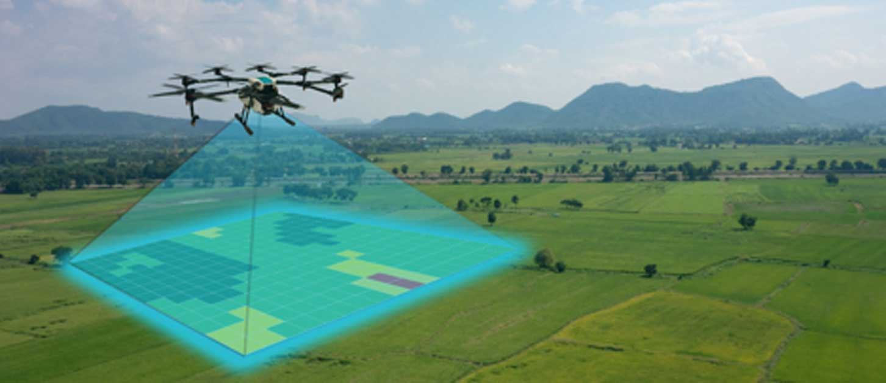

✨ Meet Dr. Sophie's Adventure! 🚁💜
How Dr. Sophie 👩🔬 uses drones 🚁 and smart robots 🤖 to find buried treasure faster (without walking SO much!)

🧠 Did You Know?
Archaeologists do NOT study dinosaurs — that's paleontology!
📝 Help Us Learn!
Tell us what you think about archaeology and this project
Take Our Survey View Results🎮 Quiz!
Test your knowledge 🍀
🎉
Quiz Complete!
🎓 Learn More About Archaeology
🏺
What Is Archaeology?

Archaeology is the study of people from the past by looking at things they left behind—called
artifacts. Archaeologists learn about how people lived, what they ate, what tools they used, and
how they built homes and cities.
🔍
What Are Artifacts?

archeology.org - roman coins in poland →
Artifacts are objects made or used by humans. Examples include pottery pieces, coins, tools,
jewelry, bones, and old building materials. Even broken artifacts can be just as valuable as
whole ones!
👣
What Is Fieldwalking?

rossnareedig wordpress - grid survey method →
Fieldwalking is a method archaeologists use to find artifacts without digging. They walk across
land in straight lines, look carefully at the ground, and record what they find and where they
find it.
🧭
How Do We Record Finds?

notebookstories - archeological notebooks →
crowcanyon.org - GPS mapping →
Archaeologists use GPS coordinates, maps, photos, and notes to record discoveries. Recording
exact locations is very important so that history is not lost!
🚁
Modern Technology

dronelife.com - drones for archaeology →
Today, archaeologists use drones, satellites, ground-penetrating radar, and AI to work faster
and protect sites. Technology helps us discover more with less digging!
📚
Learn More Online
Check out these amazing resources to explore archaeology further: